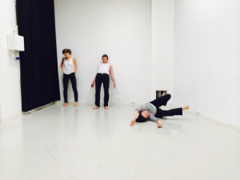

Prøverom: Fugleslottet av M.H. Hallum og Øystein Johansen
- Dato:
- 01.11.2013 til 03.11.2013
- Start kl :
- 10:00
- Slutt kl :
- 16:00
- Adresse:
- Norsk Skuespillersenter, Welhavensgate 1, Oslo
 Malmfrid Hovsveen Hallum og Øystein Johansen gjennomførte Prøverom med sitt prosjekt Fugleslottet.
{kind=link}
De involverte:
Dramatiker Malmfrid Hovsveen Hallum er utdannet fra blant annet Rose Bruford College of Speech and Drama i London. Malmfrid har skrevet flere dramatiske verk. Flere av dem har for eksempel blitt framført
under Norsk Dramatikkfestival og nå senest i London, som iscenesatte lesninger.
Regissør Øystein Johansen er utdannet fra Teaterhøyskolen i Amsterdam, har jobbet som regissør og scenekunstner ved blant annet Huis van Bourgondië, The Great Pretenders, Malpertuis, Black Box, Teatergarasjen, Dramatikkens Hus, og nå for tiden ved Teater Innlandet. Øysteins hovedfokus er en fysisk inngang til tekst: hvor man skyver psykologi til side og leter i skjæringspunkt mellom impuls og fastlagte bevegelser.
Deres samarbeid startet ved Teater Innlandets produksjon !Kyss, hvor Malmfrid Hallum
hadde skrevet monologen «Madonna, the unbearable lightness of being» som Øystein
Johansen hadde regi på.
Om prosessen:
"Vårt mål med prøverommet var å utvikle et konsept for «Fugleslottet», hvor vi i hovedsak var interessert i å utforske det fysiske livet i "Fugleslottet" og hvordan barna forholder seg til landskapet rundt seg. Scenebeskrivelsen er lite konkret i så måte. Sitter barna fanget hver for seg? Er de bundet fast? Er limbo en myr hvor man når som helst kan trå feil, tråkke gjennom og forsvinne? Hvilken rolle spiller teksten i dette?
«Fugleslottet» er en idé, en meditasjon over limbo. En kan se for seg at det er kun tre barn
til stede, at det er flere barn i landskapet og teksten er delt på flere, eller at fortellingen går
i loop. «Fugleslottet» tilhører ikke vår verden, fortellingen er ikke realistisk. Så målet var å utforske et uttrykk som bringer dette til live. Det er det visuelle og det fysiske landskapet som er premisset for teksten. Og dette brukte vi Prøveromsordningen for å forske videre i."
Utdrag fra rapporten:
"Skuespillerene var Oddgeir Thune, Thale Tornes og Julie Solberg. Vi jobbet tre dager i stallen. Et litt mindre rom enn hva som ble forespeilet oss. Vi utforsket gjennom bevegelsesimprovisasjoner fra de små gitte omstendighetene i teksten (de er i en glasskule, ingenting er opp eller ned, frem eller bak). Dette gav tydelige trekk til karakterene som igjen gav en fin inngang til selve teksten. Etterhvert lette vi i rytmen i teksten med motsetning til bevegelseskvaliteten som inngang. Etter tre dagers workshop endte vi med en liten gjennomgang av arbeidet med forfatteren, og diskuterte litt hva vi ville videre med teksten, og fant ut at vi vil kontakte en komponist for å skape musikk til teksten, slik at teksten kan resiteres eller synges. Dette arbeidet er nå igang."
{kind=link}